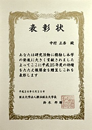
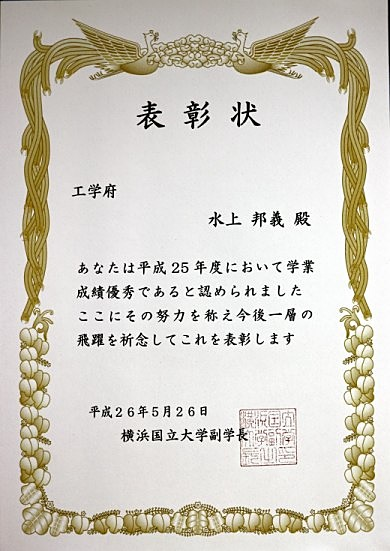
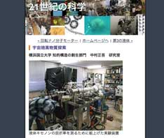

トピックス
【祝】M2の三浦が中間報告会で奨励賞を受賞！［2024年4月］
 昨年12月に物理工学分野で開催された中間発表会においてポスター発表を行なった博士課程前期１年（当時）の三浦が奨励賞を受賞しました。
昨年12月に物理工学分野で開催された中間発表会においてポスター発表を行なった博士課程前期１年（当時）の三浦が奨励賞を受賞しました。ポスターの題目は「CMB偏光観測衛星LiteBIRDの低周波望遠鏡に用いるミリ波吸収体の近傍界反射測定」で，JAXA/ISASで行なってきた研究のポスター発表が高く評価されました。
【祝】M1の伊藤が第38回「放射線検出器とその応用」研究会でポスター発表し研究会奨励賞を受賞！［2024年1月］
1月22日（月），23日（火）に高エネルギー加速器研究機構で開催された第38回研究会「放射線検出器とその応用」において、ポスター発表を行なった博士課程前期１年の伊藤が研究会奨励賞を受賞しました。ポスターの題目は「瀬谷－波岡型分光器と冷却CCDカメラを用いた真空紫外分光測光システムの研究」で、真空紫外分光器に超低ノイズで高感度な冷却CCDカメラを組み合わせて開発を進めている分光測光系の概要について発表しました。特に、光学系の性能を高めるために施した種々の工夫と努力が高く評価されました。
開発中の分光測光系は今後、世界各地で進行中の宇宙暗黒物質探索実験や二重β崩壊探索実験で必要不可欠な基礎データを取得する上でおおいに役立つものと期待されています。
【祝】D1の谷山が日本物理学会で学生優秀発表賞を受賞！［2021年10月］

 9月14日（火）から17日（金）まで，日本物理学会2021年秋季大会がオンラインで開催され，博士課程前期１年の谷山が講演して日本物理学会学生優秀発表賞（素粒子実験領域）を10月9日に受賞しました。受賞対象となった講演の題目は「次世代の暗黒物質探索実験に向けた液体キセノンの近赤外発光測定のための装置開発」で，若手の優秀な発表であると評価されました。
9月14日（火）から17日（金）まで，日本物理学会2021年秋季大会がオンラインで開催され，博士課程前期１年の谷山が講演して日本物理学会学生優秀発表賞（素粒子実験領域）を10月9日に受賞しました。受賞対象となった講演の題目は「次世代の暗黒物質探索実験に向けた液体キセノンの近赤外発光測定のための装置開発」で，若手の優秀な発表であると評価されました。
【祝】D1の谷山が科研費の研究会で優秀発表賞を受賞！［2021年5月］
 5月19日（水）〜21日（金）に科学研究費補助金の新学術領域「地下から解き明かす宇宙の歴史と物質の進化」領域研究会がオンラインで開催され，博士課程後期１年の谷山天晴が21日（金）に講演して優秀発表賞を受賞しました。受賞対象となった発表題目は「次世代の暗黒物質探索実験に向けた液体キセノンの近赤外発光の研究～高精度なスペクトル技術の応用と今後の展開～」で，フラッシュトークとポスター発表が共に優れていたことが評価されました。
5月19日（水）〜21日（金）に科学研究費補助金の新学術領域「地下から解き明かす宇宙の歴史と物質の進化」領域研究会がオンラインで開催され，博士課程後期１年の谷山天晴が21日（金）に講演して優秀発表賞を受賞しました。受賞対象となった発表題目は「次世代の暗黒物質探索実験に向けた液体キセノンの近赤外発光の研究～高精度なスペクトル技術の応用と今後の展開～」で，フラッシュトークとポスター発表が共に優れていたことが評価されました。
【祝】博士課程前期２年の金井がYNU CREATES論文賞受賞と成績優秀者の表彰！［2018年3月］

 博士課程前期２年の金井啓晃が，3月23日（金）付けで，YNU CREATES論文賞を工学府から受けました。また，平成29年度修了生の成績優秀者として同窓会からも表彰を受けました。
博士課程前期２年の金井啓晃が，3月23日（金）付けで，YNU CREATES論文賞を工学府から受けました。また，平成29年度修了生の成績優秀者として同窓会からも表彰を受けました。
【祝】学部４年の高久がナノテク交流シンポジウムで最優秀発表賞を受賞！［2018年3月］
 3月6日（火）に，横浜国立大学中央図書館１階メディアホール・大学会館において横浜国立大学・横浜市立大学第13回ナノテク交流シンポジウムが開催され，学部４年の高久が発表して100件近い発表の中から最高の最優秀発表賞を受賞しました。
発表のタイトルは「宇宙マイクロ波背景放射偏光観測衛星LiteBIRDの偏光変調器のための広帯域反射防止微細構造の研究」でした。
3月6日（火）に，横浜国立大学中央図書館１階メディアホール・大学会館において横浜国立大学・横浜市立大学第13回ナノテク交流シンポジウムが開催され，学部４年の高久が発表して100件近い発表の中から最高の最優秀発表賞を受賞しました。
発表のタイトルは「宇宙マイクロ波背景放射偏光観測衛星LiteBIRDの偏光変調器のための広帯域反射防止微細構造の研究」でした。
研究室の紹介パンフレット第２版［2018年2月］

 中村研究室の紹介パンフレット「宇宙素粒子物理学へのいざない」（京都工芸繊維大学大学院の宇都宮里梨子氏の全面的なご協力とデザインによる）が，若干手直しされて第２版になりました。なお，同じもののデジタル版もここに公開しています。対応するQRコードもご利用下さい。
中村研究室の紹介パンフレット「宇宙素粒子物理学へのいざない」（京都工芸繊維大学大学院の宇都宮里梨子氏の全面的なご協力とデザインによる）が，若干手直しされて第２版になりました。なお，同じもののデジタル版もここに公開しています。対応するQRコードもご利用下さい。
【祝】博士課程前期２年の金井と学部４年の中野が横浜国立大学アプリコンテストで受賞！［2017年11月］
 第４回横浜国立大学アプリコンテスト（YAC2017）において，11月18日（土）に決勝が行なわれた結果，博士課程前期２年の金井啓晃（チーム「KAN」）がアプリ開発部門で準優勝し，学部４年の中野（チーム「Ｎ」）がハードウェア部門でスポンサー賞（rakumo賞）を受賞しました。
第４回横浜国立大学アプリコンテスト（YAC2017）において，11月18日（土）に決勝が行なわれた結果，博士課程前期２年の金井啓晃（チーム「KAN」）がアプリ開発部門で準優勝し，学部４年の中野（チーム「Ｎ」）がハードウェア部門でスポンサー賞（rakumo賞）を受賞しました。
研究室の紹介パンフレットが完成！［2017年8月］
 8月5日（土），6日（日）の２日間，本学でオープンキャンパスが行われます。中村研究室は，今年度は物理工学教育プログラムのオープンラボの対象研究室にはなっていませんが，本研究室に関心をお持ちの方は，研究室を覗いて見て下さい。誰か適当な研究室メンバーが居ましたらご対応したいと思います。
8月5日（土），6日（日）の２日間，本学でオープンキャンパスが行われます。中村研究室は，今年度は物理工学教育プログラムのオープンラボの対象研究室にはなっていませんが，本研究室に関心をお持ちの方は，研究室を覗いて見て下さい。誰か適当な研究室メンバーが居ましたらご対応したいと思います。また，オープンキャンパス2017に合わせ，研究室の紹介パンフレット「宇宙素粒子物理学へのいざない」（第１版）が，京都工芸繊維大学大学院の宇都宮里梨子氏の全面的なご協力とデザインにより完成しました。中村研究室にお越しの際は，是非お手にとってご覧下さい。なお，同じもののデジタル版もここに公開しています。対応するQRコードもご利用下さい。
【祝】学部４年の狩野が成績優秀者の表彰［2017年3月］
学部４年の狩野芳樹が，3月24日（木）付けで，平成28年度卒業生の成績優秀者として同窓会から表彰を受けました。中村が県下の高校で出張サイエンスカフェ［2016年12月］
12月20日（火）に，中村が神奈川県立光陵高等学校で出張サイエンスカフェを行いました。タイトルは「物質の究極とは？ー素粒子の話」で，ノーベル物理学賞を受賞した日本の多くの物理学者の研究の話を含め，素粒子物理学の面白さを易しく紹介しました。高校生の皆さんにこの分野の研究の魅力が少しでも伝われば幸いです。【祝】博士課程前期１年の金井が横浜国立大学アプリコンテストで受賞［2016年11月］
第３回横浜国立大学アプリコンテスト（YAC2016）の開発部門に，博士課程前期１年の金井啓晃（チームKAN）がエントリーし，11月20日（日）に決勝が行なわれた結果，スポンサー賞（NewsPicks賞）を受賞しました。【祝】学部４年の狩野が成績優秀者の表彰［2016年10月］
 学部４年の狩野芳樹が，5月19日（木）付けで，平成27年度秋学期における理工学部４年のＥＰ内の成績優秀者として副学長から表彰を受け，10月4日（火）に授与されました。
学部４年の狩野芳樹が，5月19日（木）付けで，平成27年度秋学期における理工学部４年のＥＰ内の成績優秀者として副学長から表彰を受け，10月4日（火）に授与されました。
中村が県下の高校で出張講義［2016年6月］
6月22日（水）に，昨年度に引き続き，中村が神奈川県立横須賀高等学校で出張講義を行いました。タイトルは「素粒子と宇宙の物理学の世界」で，昨年にノーベル物理学賞を受賞された梶田先生の研究の話や，今年に検出されて世界的に話題となった重力波の話を含め，素粒子物理学と宇宙物理学の魅力を易しく紹介しました。小柴先生を先輩とする若い高校生の皆さんにこの分野の研究の魅力が少しでも伝われば幸いです。【祝】学部４年の武田が成績優秀者の表彰［2016年3月］
 学部４年の武田紘樹が，3月24日（木）付けで，平成27年度卒業生の成績優秀者として同窓会から表彰を受けました。
学部４年の武田紘樹が，3月24日（木）付けで，平成27年度卒業生の成績優秀者として同窓会から表彰を受けました。
中村が大学訪問の高校生に講義を実施［2016年3月］
3月17日（木）に，中村が，本学で実施された2015年度横浜市桜ケ丘高等学校・横浜市立高校大学訪問において，「宇宙，素粒子，そしてニュートリノ」というタイトルで講義を行ないました。中村が広報誌『Isotope News』２月号のコラムに執筆［2016年2月］
日本アイソトープ協会の広報誌『Isotope News』No.742（2016年2月号）の「こーひーぶれいく」のページに，依頼されて中村が寄稿しました。 題は，「若き日の樹海探検」です。興味ある方は同誌をご覧下さい。中村が東京大学主催の梶田隆章先生の祝賀会に出席［2016年1月］
1月29日（金）の夜に，東京大学による，梶田隆章先生のノーベル賞受賞祝賀会が帝国ホテルで開催され，中村も出席し梶田先生のノーベル賞受賞をお祝いしました。中村がYNUサイエンスカフェで感謝状［2016年1月］
1月25日（月）に，中村がYNUサイエンスカフェの運営に長年コーディネータとして携わっていることについて， 学長から感謝状と記念品を授与されました。 また，この表彰式に引き続いて，平成27年度にYNUサイエンスカフェのファシリテータとして貢献の多かった学生への感謝状の授与式も行われました。中村が梶田隆章先生のノーベル賞受賞祝賀会に出席［2015年12月］

 12月18日（金）の夜，東京大学宇宙線研究所の共同利用研究成果発表研究会の懇親会を兼ねて，梶田隆章先生のノーベル賞受賞祝賀会が柏の葉カンファレンスセンターで開催され，中村も出席し梶田先生のノーベル賞受賞をお祝いしました。
12月18日（金）の夜，東京大学宇宙線研究所の共同利用研究成果発表研究会の懇親会を兼ねて，梶田隆章先生のノーベル賞受賞祝賀会が柏の葉カンファレンスセンターで開催され，中村も出席し梶田先生のノーベル賞受賞をお祝いしました。
中村が県下の高校で出張講義［2015年10月］
10月8日（木）に，中村が神奈川県立横須賀高等学校で出張講義を行いました。タイトルは「素粒子物理学と宇宙物理学の世界」で，素粒子物理学と宇宙物理学の面白さを駆け足で紹介しました。県立横須賀高等学校は小柴先生のご出身校ですので，実にご縁を感じます。このような機会に若い高校生の皆さんに自分の得たものを少しでも還元できれば幸いです。XMASS実験が季節変動によるダークマター探索結果を発表［2015年9月］
9月7日（月）に，中村等が属するXMASS実験グループが，季節変動によるダークマター探索の結果を発表しました。＞＞＞ 発表の文書
ダークマターは相変わらず謎で，さらに研究は続きます。
本学の広報誌『ヨコマガ』に中村の記事が掲載［2015年8月］
本学の学生向け広報誌『ヨコマガ』通刊58号（平成27年8月発行）の「あの先生の知られざる横顔」のページに，中村が取り上げられています。副題は，「自然と人間の関わりについて考える。」です。興味ある方はご覧下さい。＞＞＞ 『ヨコマガ』通刊58号
【祝】博士課程前期２年の入江が成績優秀者の表彰［2015年5月］
博士課程前期２年の入江郁也が，5月29日（金）付けで，平成26年度工学府博士課程前期１年のコース内の成績優秀者として副学長から表彰を受けました。雑誌『数理科学』7月号に中村が執筆［2014年6月］
 中村が昨年末に依頼された，
磁気単極子（モノポール）の実験的な探索に関する稿が，雑誌『数理科学』7月号の特集「モノポールの謎」（6月20日発売）の20〜25頁に掲載されました。
対象は学部生および一般向けとしてとして書きましたので簡単な内容ですが，ご興味ある方はお読み頂ければ幸いです。
中村が昨年末に依頼された，
磁気単極子（モノポール）の実験的な探索に関する稿が，雑誌『数理科学』7月号の特集「モノポールの謎」（6月20日発売）の20〜25頁に掲載されました。
対象は学部生および一般向けとしてとして書きましたので簡単な内容ですが，ご興味ある方はお読み頂ければ幸いです。
＞＞＞ 『数理科学』のサイト
中村がYNU研究貢献賞を受賞［2014年6月］
6月25日に，中村が横浜国立大学のYNU研究貢献賞（外部資金獲得研究者表彰）を受賞し， 工学研究院長から表彰状と目録を授与されました。 この賞は、前年度に研究代表者として獲得した外部資金（科研費・受託研究費・共同研究費）の獲得実績と，さらにその中から，今後も優れた研究成果をあげることが 期待できると認められる者に対して授与されるものとのことですので，この賞に恥じぬように今後も研究を進めていきたいと思います。（全学Webサイトのニュースはこちら）→公開は終了したようです
【祝】博士課程前期２年の水上が成績優秀者の表彰［2014年5月］
 博士課程前期２年の水上邦義が，5月26日（月）付けで，平成25年度工学府博士課程前期１年のコース内の成績優秀者として副学長から表彰を受けました。
博士課程前期２年の水上邦義が，5月26日（月）付けで，平成25年度工学府博士課程前期１年のコース内の成績優秀者として副学長から表彰を受けました。
中村が平成24年度横浜国立大学ベストティーチャー賞を受賞［2013年6月］
 中村が他の7名の教員と共に平成24年度横浜国立大学ベストティーチャー賞を受賞し，6月7日（金）に学長室においてベストティーチャー賞授与式が行われました。授与式の冒頭，学長から今後のさらなる教育方法改善に期待を込めた挨拶があり，表彰状及び記念品（右下写真）を戴きました。
中村が他の7名の教員と共に平成24年度横浜国立大学ベストティーチャー賞を受賞し，6月7日（金）に学長室においてベストティーチャー賞授与式が行われました。授与式の冒頭，学長から今後のさらなる教育方法改善に期待を込めた挨拶があり，表彰状及び記念品（右下写真）を戴きました。
この賞は，本学において優れた教育を行っている教員を表彰し，その教育方法を大学全体に伝え，大学全体の教育方法改善の契機とすることを目的としているとのことですので，この賞に恥じないように今後も努力を続けていきたいと思います。
（全学Webサイトのニュースはこちら）
【祝】学部４年の近末が成績優秀者の表彰［2012年3月］
学部４年の近末吉人が，3月23日（金）付けで，平成23年度卒業生の成績優秀者として同窓会から表彰を受けました。【祝】博士課程前期２年のあべ松が成績優秀者の表彰［2012年3月］
 博士課程前期２年のあべ松高志が，3月23日（金）付けで，平成23年度博士課程前期修了生の成績優秀者として副学長から表彰を受けました。
博士課程前期２年のあべ松高志が，3月23日（金）付けで，平成23年度博士課程前期修了生の成績優秀者として副学長から表彰を受けました。【祝】M2の高木が「放射線検出器とその応用」研究会で講演し研究会奨励賞を受賞！［2012年1月］

 1月24日（火）〜26日（木）に第26回「放射線検出器とその応用」研究会（高エネルギー加速器研究機構放射線科学センターと応用物理学会・放射線分科会との共催）が高エネルギー加速器研究機構（つくば）で開催され，25日（水）と26日（木）にそれぞれ，博士課程前期２年の高木がShort Oralとポスターの発表を行ないました。タイトルは「液体キセノンTPCのための低温動作フロントエンド集積回路の開発」で，高エネルギー加速器研究機構他と共同で開発を進めているASICについて発表しました。
なお，発表後に高木はただ１人めでたく研究会奨励賞を受賞し，表彰状と記念品が贈呈されました！ 受賞理由は，幅広く応用が可能な技術の開発に成功していることと，Short Oralの受け答えとポスター発表共に優れていたこととのことです。
本研究会は，放射線検出器の基礎的物理化学的過程から検出器開発，放射線計測技術に至るまでの広範なテーマについて各分野の全国の研究者が集まって議論する集まりで，四半世紀以上の長い歴史があります。このような由緒正しい公的な場で，昨年の鳥越に続いて２年連続で当研究室の研究発表が認められたということは大変喜ばしく，非常に力づけられる次第です。本研究は日頃から高い志を持って地道な努力を粘り強く積み重ねてきた成果だと思います。これまでに様々に支援をして下さった共同研究者の皆さんに深く感謝申し上げます。なお，報告した研究はまだやるべき課題が残っていますが，それらを解決していけば，研究成果は今後，低温で用いる放射線検出器において微弱な電気信号を処理する必要のある幅広い研究で用いられると期待されています。
1月24日（火）〜26日（木）に第26回「放射線検出器とその応用」研究会（高エネルギー加速器研究機構放射線科学センターと応用物理学会・放射線分科会との共催）が高エネルギー加速器研究機構（つくば）で開催され，25日（水）と26日（木）にそれぞれ，博士課程前期２年の高木がShort Oralとポスターの発表を行ないました。タイトルは「液体キセノンTPCのための低温動作フロントエンド集積回路の開発」で，高エネルギー加速器研究機構他と共同で開発を進めているASICについて発表しました。
なお，発表後に高木はただ１人めでたく研究会奨励賞を受賞し，表彰状と記念品が贈呈されました！ 受賞理由は，幅広く応用が可能な技術の開発に成功していることと，Short Oralの受け答えとポスター発表共に優れていたこととのことです。
本研究会は，放射線検出器の基礎的物理化学的過程から検出器開発，放射線計測技術に至るまでの広範なテーマについて各分野の全国の研究者が集まって議論する集まりで，四半世紀以上の長い歴史があります。このような由緒正しい公的な場で，昨年の鳥越に続いて２年連続で当研究室の研究発表が認められたということは大変喜ばしく，非常に力づけられる次第です。本研究は日頃から高い志を持って地道な努力を粘り強く積み重ねてきた成果だと思います。これまでに様々に支援をして下さった共同研究者の皆さんに深く感謝申し上げます。なお，報告した研究はまだやるべき課題が残っていますが，それらを解決していけば，研究成果は今後，低温で用いる放射線検出器において微弱な電気信号を処理する必要のある幅広い研究で用いられると期待されています。中村の巻頭エッセイが掲載されました［2011年11月］
11月10日発行の大修館書店の『G.C.D.英語通信』No.49（年２回発行）に，中村が書いた"アマチュア科学者だった頃"というタイトルの巻頭エッセイが掲載されました。日本衣服学会誌に中村が寄稿［2011年9月］
今夏に中村が依頼を受け，日本衣服学会誌で予定されている特集『大震災を受けてー衣服のちから』に「放射能情報の見方と除染のヒント」という記事を寄せました。日本家政学会の夏季セミナーに続く話ですが，この稿を通してさらに多くの方のお役に立てば幸いです。日本家政学会被服整理学部会夏季セミナーで中村が講演［2011年9月］
8月30日（火）・３1日（水）にホテル横浜ガーデンで日本家政学会被服整理学部会の第41回夏季セミナーが開かれ，中村が依頼を受けて「放射能情報の捉え方と除染のヒント〜原発事故を受けて〜」というタイトルで１時間の講演を行ないました。内容は，原発事故を受けて被服学に携わっている方に知っておいて頂きたい放射線に関する事項についての解説でした。宇宙素粒子実験を通して放射線測定を行なっている者として，他分野にも少しでも貢献出来れば幸いです。中村がKEKサマーチャレンジ2011の演習P02を担当しました［2011年8月］
第５回となる夏のKEKサマーチャレンジが8月19日から27日までKEKで行われ，中村が演習テーマの１つ，「最新のシンチレーション検出器を究めよう〜光る結晶と光る液体キセノン〜」(pdf)をKEKのスタッフの協力の下に担当しました。震災の影響もあってかサマーチャレンジの実施に際しては多くの問題が生じ混乱含みでしたが，中村研の院生やサマーチャレンジ卒業生がTAとして活躍してくれたお陰で，本演習P02の参加者６人の皆さんについては毎日充実した有意義な９日間を過ごせたと思います。なお，他の演習テーマですが横浜国大からの参加者も２名ありました。来年もサマーチャレンジは開催されると思いますので，２年生の皆さんは来年に奮ってご応募下さい！【祝】M1の村山慧がPED基盤科目「イノベーションと起業」の発表会で受賞！［2011年7月］
 7月25日（月）に，PED基盤科目「イノベーションと起業」のビジネスプラン発表会が開かれ，博士課程前期１年の村山慧の属するHチーム（村山と他学科の２人による３人構成）が最優秀賞を受賞しました。
発表したプランは，大学独自のSNSを構築することで大学の情報システムの使い辛さと学科間の希薄な交流を解消するというもので，休講情報，単位情報や履修情報など各ユーザーに必要な情報だけに絞って配信する講義関連のサービスや，教科書の一括購入や新入生の部屋探し支援など，学生生活全般のサービスを提案しました。
7月25日（月）に，PED基盤科目「イノベーションと起業」のビジネスプラン発表会が開かれ，博士課程前期１年の村山慧の属するHチーム（村山と他学科の２人による３人構成）が最優秀賞を受賞しました。
発表したプランは，大学独自のSNSを構築することで大学の情報システムの使い辛さと学科間の希薄な交流を解消するというもので，休講情報，単位情報や履修情報など各ユーザーに必要な情報だけに絞って配信する講義関連のサービスや，教科書の一括購入や新入生の部屋探し支援など，学生生活全般のサービスを提案しました。【祝】M2の鳥越が「放射線検出器とその応用」研究会で講演し研究会奨励賞を受賞！［2011年2月］
 2月1日（火）〜3日（木）に第25回「放射線検出器とその応用」研究会（高エネルギー加速器研究機構放射線科学センターと応用物理学会・放射線分科会との共催）が高エネルギー加速器研究機構（つくば）で開催され，2日（水）と3日（木）にそれぞれ，博士課程前期２年の鳥越がShort Oralとポスターの発表を行ないました。発表のタイトルは「液体キセノンの発光スペクトルの測定」で，本研究室が各方面から支援を受けて研究を進めている液体キセノンの発光スペクトルの測定実験の最新結果と今後の予定について報告しました。
なお，発表後に鳥越はめでたく研究会奨励賞を受賞し，表彰状と記念品が贈呈されました！ 受賞理由は，これまで40年以上にわたって信じられてきた液体キセノンの発光波長値に対して取り組み新たな値を得るという成果を収めたことと，Short Oralの受け答えとポスター発表共に優れていたこととのことです。
本研究会は，放射線検出器の基礎的物理化学的過程から検出器開発，放射線計測技術に至るまでの広範なテーマについて各分野の全国の研究者が集まって議論する集まりで，四半世紀の長い歴史があります。このような由緒正しい公的な場で当研究室の研究が認められたということは大変喜ばしく，非常に力づけられる次第です。これまでに多大な貢献をしてくれたＯＢ，ＯＧの皆さんにも深く感謝申し上げます。なお，報告した研究成果は今後，XMASSなど世界各地で進行中の宇宙暗黒物質探索実験や，スイスでのμ粒子希崩壊探索実験MEG，さらに国内外で開発中の医療用PETなど，液体キセノンを用いる様々な分野で貴重なデータとして用いられると期待されています。
2月1日（火）〜3日（木）に第25回「放射線検出器とその応用」研究会（高エネルギー加速器研究機構放射線科学センターと応用物理学会・放射線分科会との共催）が高エネルギー加速器研究機構（つくば）で開催され，2日（水）と3日（木）にそれぞれ，博士課程前期２年の鳥越がShort Oralとポスターの発表を行ないました。発表のタイトルは「液体キセノンの発光スペクトルの測定」で，本研究室が各方面から支援を受けて研究を進めている液体キセノンの発光スペクトルの測定実験の最新結果と今後の予定について報告しました。
なお，発表後に鳥越はめでたく研究会奨励賞を受賞し，表彰状と記念品が贈呈されました！ 受賞理由は，これまで40年以上にわたって信じられてきた液体キセノンの発光波長値に対して取り組み新たな値を得るという成果を収めたことと，Short Oralの受け答えとポスター発表共に優れていたこととのことです。
本研究会は，放射線検出器の基礎的物理化学的過程から検出器開発，放射線計測技術に至るまでの広範なテーマについて各分野の全国の研究者が集まって議論する集まりで，四半世紀の長い歴史があります。このような由緒正しい公的な場で当研究室の研究が認められたということは大変喜ばしく，非常に力づけられる次第です。これまでに多大な貢献をしてくれたＯＢ，ＯＧの皆さんにも深く感謝申し上げます。なお，報告した研究成果は今後，XMASSなど世界各地で進行中の宇宙暗黒物質探索実験や，スイスでのμ粒子希崩壊探索実験MEG，さらに国内外で開発中の医療用PETなど，液体キセノンを用いる様々な分野で貴重なデータとして用いられると期待されています。X線マルチコリメータの特許が登録［2010年10月］
数年前から出願していた特許の「X線用コリメータ，その製法，X線検出装置及びX線入射場所の決定方法」が，無事に10月8日に登録されました。（第4599504号）中村がKEKサマーチャレンジ2010の演習12を担当しました［2010年8月］
 第４回となる夏のKEKサマーチャレンジが8月21日から29日までKEKで行われ，中村が演習テーマの１つ，「最新のシンチレーション検出器を究めよう〜光る結晶と光る液体キセノン〜」(pdf)をKEKのスタッフの協力の下に担当しました。また，中村研の院生や卒業生もTAとして大活躍しました。本演習12の参加者８人の皆さんは毎日がハードながら充実した日々であったと信じています。なお，他の演習テーマでしたが横浜国大からの参加者も数人ありました。来年も同様のテーマで演習を行うと思いますので，２年生の皆さんは来年に奮ってご応募下さい！また，中村研の院生や卒業生もTAとして活躍する予定です。
第４回となる夏のKEKサマーチャレンジが8月21日から29日までKEKで行われ，中村が演習テーマの１つ，「最新のシンチレーション検出器を究めよう〜光る結晶と光る液体キセノン〜」(pdf)をKEKのスタッフの協力の下に担当しました。また，中村研の院生や卒業生もTAとして大活躍しました。本演習12の参加者８人の皆さんは毎日がハードながら充実した日々であったと信じています。なお，他の演習テーマでしたが横浜国大からの参加者も数人ありました。来年も同様のテーマで演習を行うと思いますので，２年生の皆さんは来年に奮ってご応募下さい！また，中村研の院生や卒業生もTAとして活躍する予定です。中村が出張サイエンスカフェで高校のセミナーの演壇に立ちました［2009年9月］
9月30日（水）に神奈川県立横浜緑ヶ丘高等学校で，同校の緑高セミナーの一環として，中村が出張サイエンスカフェの演壇に立ちました。タイトルは，「この宇宙は何から出来ているか？ー 素粒子物理の世界 ー」ということで，素粒子物理の始まりから2008年にノーベル物理学賞を受賞された小林誠先生と益川敏英先生のお仕事まで駆け足で紹介しました。ひと通りの話の後には様々な質問が出て，答えることが難しい場面も度々でしたが，このようなやりとりを通じて，参加者の皆さんに少しでも素粒子物理学の面白さを感じてもらえたなら幸いです。中村がKEKサマーチャレンジの演習4を担当しました［2009年8月］
第３回となる夏のKEKサマーチャレンジが8月20日から28日までKEKで行われ，中村が演習テーマの１つ，「最新のシンチレーション検出器を究めよう〜光る結晶と光る液体キセノン〜」(pdf)をKEKのスタッフの協力の下に担当しました。また，中村研の院生や卒業生もTAとして大活躍しました。本演習４の参加者６人の皆さんには毎日がハードながら充実した日々であったと信じています。なお，今年は横浜国大からサマーチャレンジへの応募者が無く大変残念でした。来年も同様のテーマで演習を行うと思いますので，２年生の皆さんは来年に奮ってご応募下さい！
科学雑誌『Newton』11月号に中村が取材協力した内容が掲載［2007年9月］
中村が取材協力したことが，科学雑誌『Newton』11月号（9月26日発売）の44〜45頁に見開きで掲載されました。宇宙誕生時の「化石」とも言える超重磁気単極子（モノポール）について，その歴史と中村が以前に関わった探索実験の写真などが掲載され，同号の様々な箇所に，協力者として中村の名前も載っています。『Newton』のサイト http://www.newtonpress.co.jp/science/newton/
平成19年度 科学研究費補助金（学術創成研究費）にXMASS実験が採択！［2007年4月］
4月10日（火）付けで，中村が研究分担者の一人となって申請していた平成19年度科学研究費補助金（学術創成研究費）に，XMASS実験が採択されました！
課題名は「宇宙暗黒物質の研究」（研究代表者：鈴木洋一郎／東京大学宇宙線研究所所長）で，約800kgの液体キセノンを用いて，従来の約100倍という世界最高感度で宇宙暗黒物質の研究を神岡鉱山（岐阜県飛騨市）内で行ないます。平成19年度からの５ヶ年計画で，総計４億円を超える予算が認められました。
中村研究室では，液体キセノンのシンチレータとしての性質の研究を引き続き主に担当すると共に，様々な形で実験計画全体の推進に深く関わっていく予定です。
【謝辞】多くの研究費をお認めいただき，これまで様々な形で研究をご支援いただいた皆々様方に心より感謝申し上げます。国民の皆様の血税を有効に活かし良い結果を得て報いたいと考えております。 引き続きのご支援をどうぞよろしくお願い申し上げます。
BP-1ガラス製マルチコリメータを用いたＸ線CCDの電荷雲の形状測定に成功！［2007年1月］
中村研は，理化学研究所の平賀博士と共に自ら発明したBP-1ガラスマルチコリメータを用いてＸ線CCDのR&Dを行なっていますが，このたび， 中村研の博士課程前期２年の尾崎雄一が研究の中心となって，BP-1ガラスマルチコリメータを実際に用いてＸ線CCD中の電荷雲の形状を測定することに 初めて成功しました。穴がランダムに位置するコリメータを用いた実測は世界初で，これにより，海外出願中の特許が実現可能であることを完全に証明した ことになります。今後は，コリメータの性能を上げ，Ｘ線CCDの電荷雲の測定精度の向上を目指すことによって，エネルギーの高い硬Ｘ線について 測定を行なう予定です。
低温工学協会より優良発表賞を受賞［2006年5月］
中村が低温工学協会より、優良発表賞を受賞しました。この賞は低温工学・超電導学会において，得られた貴重な成果を限られた時間と空間の中で如何に多くの聴講者の理解を得るために努力したかを評価の対象に贈られるもので，2005年春季の学会における発表「液体キセノンの屈折率の測定」が対象となり，表彰状と記念メダルが授与されました。（2006年5月16日）<<授賞式の様子はこちら>>先端科学紹介サイトに中村研が掲載［2006年4月］
 高校生・大学生のための先端科学紹介サイト『21世紀の科学』に当研究室が紹介されました。［2006年4月27日掲載］（※現在、このサイトは閉じられています）